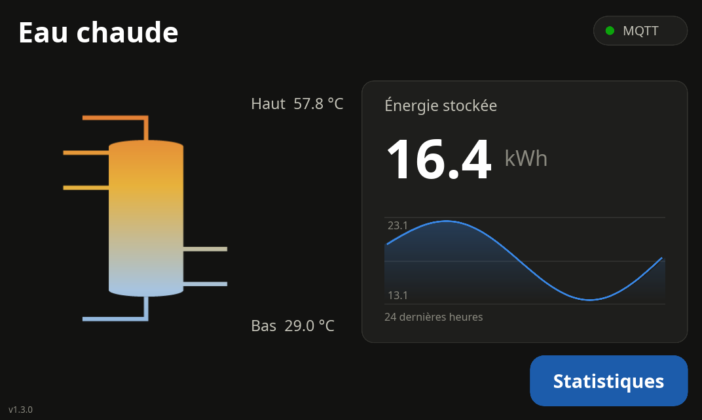
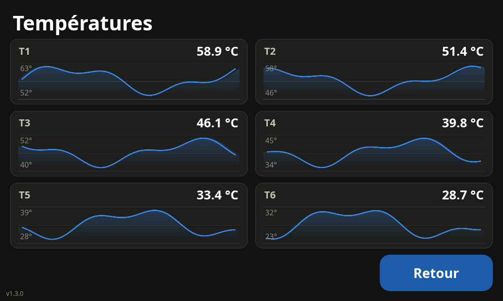

boilert reads up to six DS18B20 sensors along your hot water tank, visualizes the temperature stratification on a 7″ touchscreen, computes the stored thermal energy in kWh, and publishes everything to your MQTT broker.
Built in Rust with the Slint UI toolkit, designed for the official Raspberry Pi 7″ touchscreen (800×480) in kiosk mode.
1 to 6 DS18B20 sensors read in parallel every 2 seconds. Failed probes are flagged in red and never pollute the data.
The tank is modeled as equal-volume slices; the stored thermal energy above the cold-water reference is computed live.
The boiler drawing is tinted with a 6-stop coolwarm gradient interpolated from the measured temperatures.
Auto-scaled graphs for each sensor and for the stored energy, persisted across restarts (15-minute resolution).
Retained messages, availability topic with last will, non-blocking publishing — an unreachable broker never stalls the measurements.
Runs with real sensors on a Raspberry Pi (--features pi) or with realistic simulated data on any desktop.
Borderless 800×480 window with large touch targets, designed for a wall-mounted kiosk.


A Raspberry Pi, DS18B20 probes on a 1-Wire bus, and optionally the companion interface board designed for this project.
Retained messages (QoS 1) published every publish_interval_s seconds — ready for Home Assistant or any home automation system.
| Topic | Description | Payload |
|---|---|---|
{base_topic}/{sensor_name} | Temperature of one sensor | °C, 2 decimals |
{base_topic}/energy | Total stored energy | kWh, 3 decimals |
{base_topic}/status | Availability (last will) | online / offline |
Try it in simulation mode on any machine — no hardware needed. The full commissioning procedure is in the PDF manual.
git clone https://github.com/guycorbaz/boilert.git
cd boilert
cargo runThe pi feature enables real DS18B20 reading via the 1-Wire kernel interface.
cargo build --release --features piSensors are listed from the top of the tank to the bottom.
[mqtt]
host = "mqtt.home.arpa"
port = 1883
base_topic = "boilert/sensors"
[boiler]
volume_l = 500.0
reference_temp_c = 15.0
energy_coefficient = 1.162
[[sensors]]
name = "Top"
id = "28-000000000001"sudo cp deploy/boilert.service /etc/systemd/system/
sudo systemctl enable --now boilert